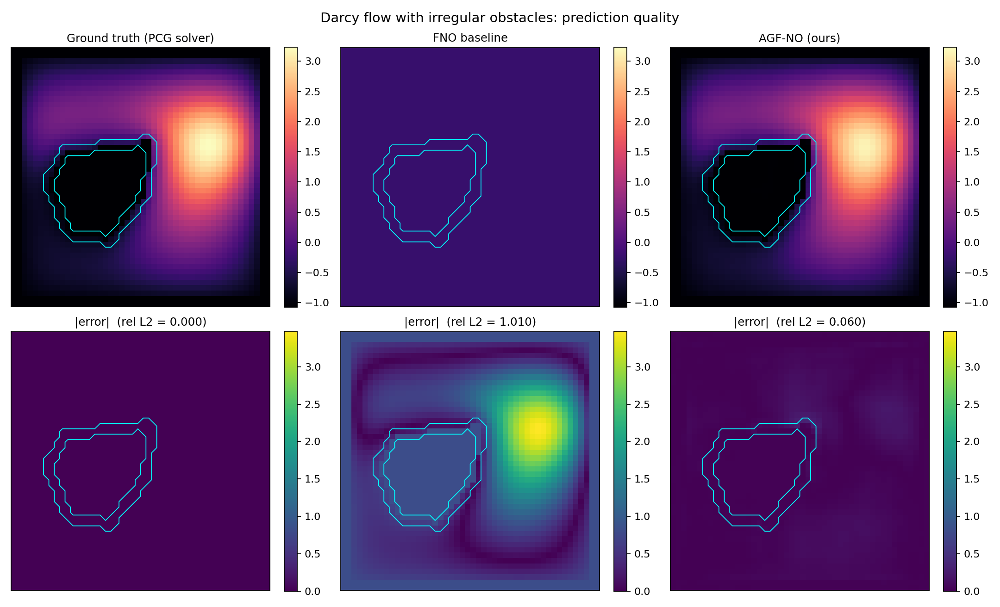
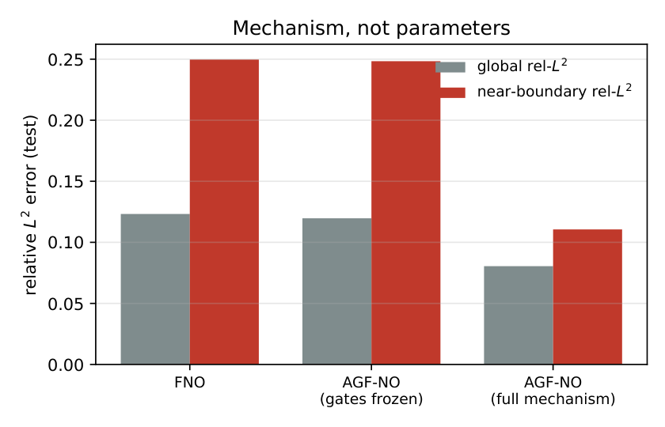
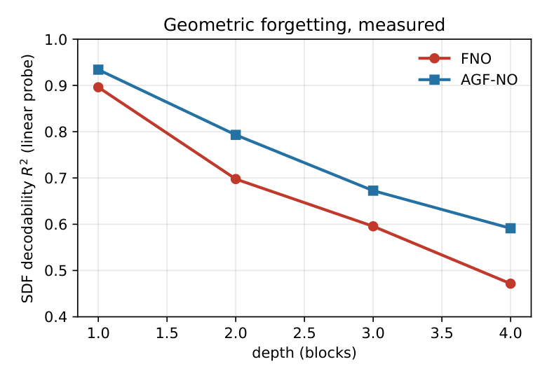
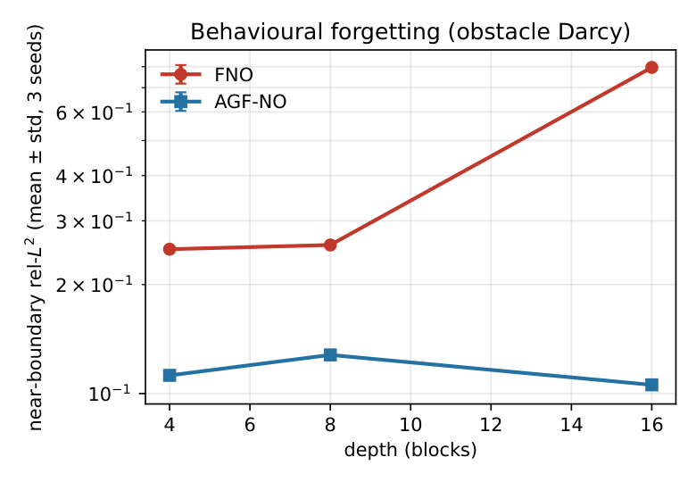
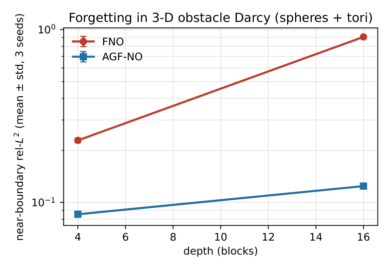

Ground truth (left), the depth-16 FNO (center, rel-L² 1.010 — collapsed: a smooth field with the geometry gone), and AGF-NO (right, rel-L² 0.060). The case is the median-FNO-error member of the held-out batch; all eight per-sample FNO values sit in 0.79–1.10. Obstacle boundaries outlined in cyan.
Fourier Neural Operators learn mappings between function spaces with \(O(N\log N)\) cost, but their global mixing channel is structurally band-limited: mode truncation discards every Fourier mode above the cut, so sharp boundary content and long-range boundary interactions must either be re-synthesized by pointwise nonlinearities or be lost. This paper states the truncation band-limitation precisely, and shows that a multiplicative, field-valued modulation of the spectral weights — derived from a signed distance function (SDF) of the domain — restores the missing band through spectral convolution: the product of a low-band latent with a kinked modulation field regenerates high-frequency content at exactly the wall locations where the truncated operator is wrong. The architecture, AGF-NO, is zero-gated: it begins as an exact FNO and learns how much geometry to use. The paper then does what the operator-learning literature has consistently failed to do for "geometric forgetting": measure it. A closed-form linear probe on each block's latent shows decodable boundary information collapsing with depth (probe \(R^2\) 0.896 → 0.472 over four blocks) to total collapse at depth 16 (\(R^2 = 0.0003\)) — exactly tracking the operator's behavioural collapse (rel-L² 1.005, three seeds, zero overlap with the healthy regime) — while the re-injecting operator plateaus (0.633). The collapse–plateau replication lifts to three dimensions (spheres and solid tori: FNO 1.008 vs AGF-NO 0.113 at depth 16; probe 0.020 vs 0.494), so the phenomenon is dimension-independent. A Geo-FNO-style deformation baseline confirms the structural diagnosis (interior walls are not simply connected — no diffeomorphism flattens them), a closed-form a-priori diagnostic predicts where the mechanism pays on a second PDE family, and every claim is seed-replicated with every number traced to a committed JSON.
An FNO block's global channel is the low-band projection: high-band boundary content cannot be created by it, and every long-range boundary interaction is low-pass filtered through a Dirichlet (sinc) reachability kernel. Depth compounds the loss. Additive or FiLM-style geometry injection changes the latent but leaves every block's global channel exactly as band-limited as before — geometry added to the latent is annihilated by the next truncation. Multiplicative, field-valued modulation is the minimal change that alters the global channel itself: a product of fields is a convolution of spectra, so a low-band latent multiplied by a kinked modulation regenerates the high band — measured at >20× high-band energy at the walls, versus zero for any constant modulation. Because both geometry paths are zero-gated, AGF-NO starts as an exact FNO (unit-tested to numerical identity) and inherits its training dynamics until the gates open.

Freeze the gates and you get the FNO back (error ratio 0.97 — no free capacity win). Remove the penalty from the loss and AGF-NO still wins on every metric (0.082 vs 0.125) — the mechanism, not the loss term, carries the effect. Identical inputs, identical budgets, 3 seeds.

Closed-form ridge probe for SDF decodability in each block's latent. FNO: 0.896 → 0.472 over four blocks, → 0.0003 at depth 16 — geometry erased. AGF-NO: 0.934 → 0.591, → 0.633 plateau (spread 0.045 across depths 4–16).

Behavioural counterpart: near-wall error vs depth. FNO degrades gently to depth 8, then collapses outright at 16 (global rel-L² 1.005 ± 0.002 — a 12.0× ratio to AGF-NO, whose seed variance at 16 is 1.4%). The probe predicts it; the loss delivers it.

Spheres + solid tori (multiply-connected — deformation escapes are structurally unavailable). FNO: 0.144 at depth 4 → 1.008 ± 0.000 at 16, zero seed overlap. AGF-NO: 0.077 → 0.113, depth-stable. The phenomenon is dimension-independent.
2-D obstacle Darcy (48², 3 seeds, identical budgets; global rel-L² and near-wall "ring" rel-L²):
| depth | FNO global | FNO ring | AGF-NO global | AGF-NO ring |
|---|---|---|---|---|
| 4 | 0.1250 ± 0.0030 | 0.2506 ± 0.0011 | 0.0801 ± 0.0010 | 0.1123 ± 0.0035 |
| 8 | 0.1449 ± 0.0040 | 0.2573 ± 0.0025 | 0.1109 ± 0.0058 | 0.1279 ± 0.0016 |
| 16 | 1.0054 ± 0.0016 — collapsed | 0.7964 ± 0.0069 | 0.0841 ± 0.0012 — stable | 0.1057 ± 0.0020 |
3-D obstacle Darcy (32³, spheres + tori, 3 seeds):
| depth | FNO global | FNO ring | probe R² | AGF-NO global | AGF-NO ring | probe R² |
|---|---|---|---|---|---|---|
| 4 | 0.144 ± 0.020 | 0.229 ± 0.007 | 0.494 ± 0.044 | 0.077 ± 0.003 | 0.085 ± 0.003 | 0.530 ± 0.023 |
| 16 | 1.008 ± 0.000 | 0.907 ± 0.001 | 0.020 ± 0.012 | 0.113 ± 0.003 | 0.124 ± 0.003 | 0.494 ± 0.015 |
Canonical benchmark & baselines. On the literature's piecewise-constant Darcy setting, with the penalty and ring-channel confounds removed, AGF-NO reduces global error 25% (0.194 → 0.145). A Geo-FNO-style learned deformation improves the simply-connected part of the problem (0.106 vs 0.123 global) but stays blind at the walls (ring 0.239, statistically indistinguishable from FNO's; wall fidelity 0.076 vs AGF-NO's 0.005) — a domain with interior wall obstacles is not simply connected, so no diffeomorphism of the box flattens it. Published FNO (0.0082) and Geo-FNO (0.0068) numbers are quoted for scale only, with explicit non-comparability caveats (different generators, resolutions, splits).
Second PDE family & the a-priori diagnostic. On the advection family the error is boundary-resolved there too, and the zero-shot rollout ratio is ~1.44 for both models — the fix adds fidelity, not fragility. A closed-form diagnostic (Δρ: the geometric skew of near-wall error under the frozen operator) is computable before any training, from data the practitioner already has: on Darcy it predicts a large boundary-mechanism gain (+0.024, measured 55% ring reduction); on advection it predicts a small one (−0.024, measured 4%). Functional form, validated on both families, honestly scoped in the paper's limitations.
The global channel of a spectral-convolution block is multiplication by a mask in Fourier space — convolution with a sinc kernel in physical space. That kernel is shift-invariant: it cannot know where the walls are, and it cannot carry what they look like. Three falsifiable predictions fall out, and all three are measured: P1 — a wall-localized perturbation propagates through a trained FNO latent as a band-limited sinc-shaped footprint (measured ring-to-far error ratio 1.66 for FNO vs 1.32 for AGF-NO); P2 — multiplicative modulation regenerates the truncated band (measured: 43% lower high-band ring error, >20× wall high-band energy vs constant modulation); P3 — decodable geometry decays with depth for the vanilla operator and plateaus for the re-injecting one (measured: 0.0003 vs 0.633 at depth 16, replicated in 3-D at 0.020 vs 0.494). The over-smoothing analogy is deliberate: GNNs were diagnosed the same way — representationally, layer by layer — before the field accepted the mechanism.
Trained models + full artifact stack on Hugging Face · Result JSONs on Kaggle
git clone https://github.com/sehajr-singhs/agfno cd agfno pip install -r requirements.txt python -m pytest agfno/tests -q # 41 tests: solvers, SDFs, zero-gate identity, gates, probe python smoke_suite.py # CPU smoke of every experiment family python launch.py # 2-D matrix + forgetting sweep (Modal A100 / local CUDA) python launch.py --quick # sanity run python -m agfno.experiments4 --quick # 3-D matrix (T4-scale) python paper/gen_hero.py # regenerate the hero figure from the HF checkpoints
Seeded protocol (3 seeds per condition; per-seed JSONs committed in results/runs/), 221 programmatic paper macros, one-click GPU reruns. Every number on this page is typeset from the same JSONs.